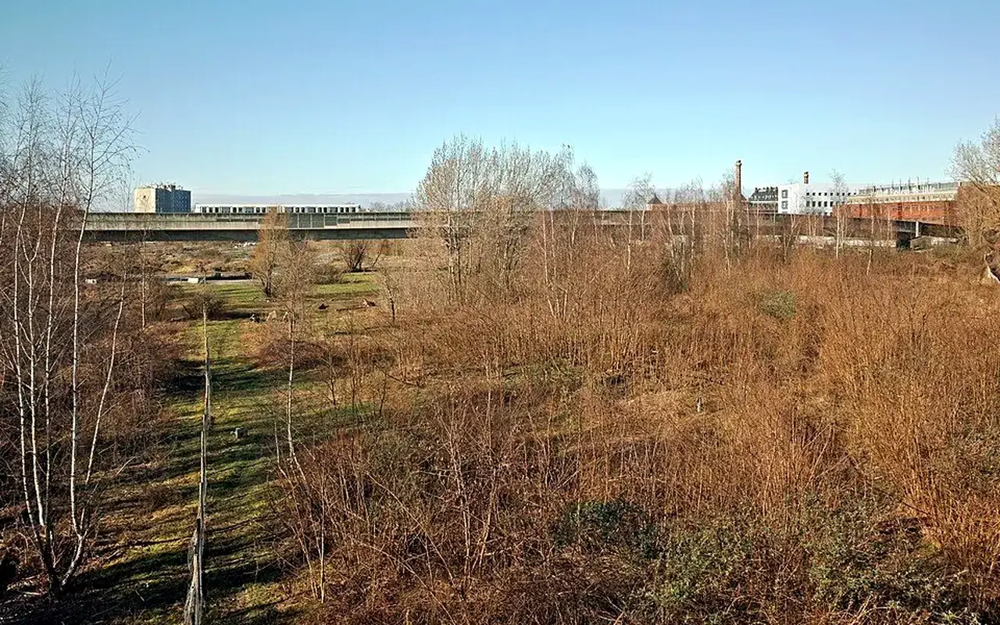
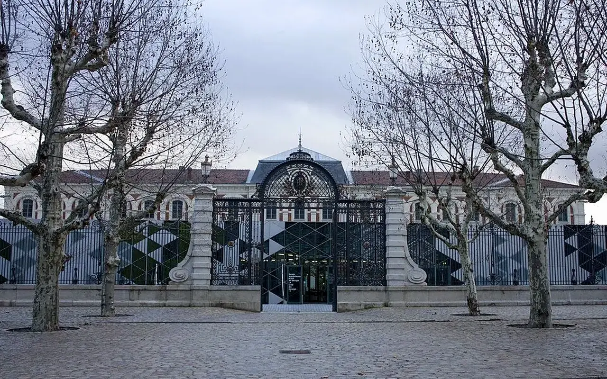
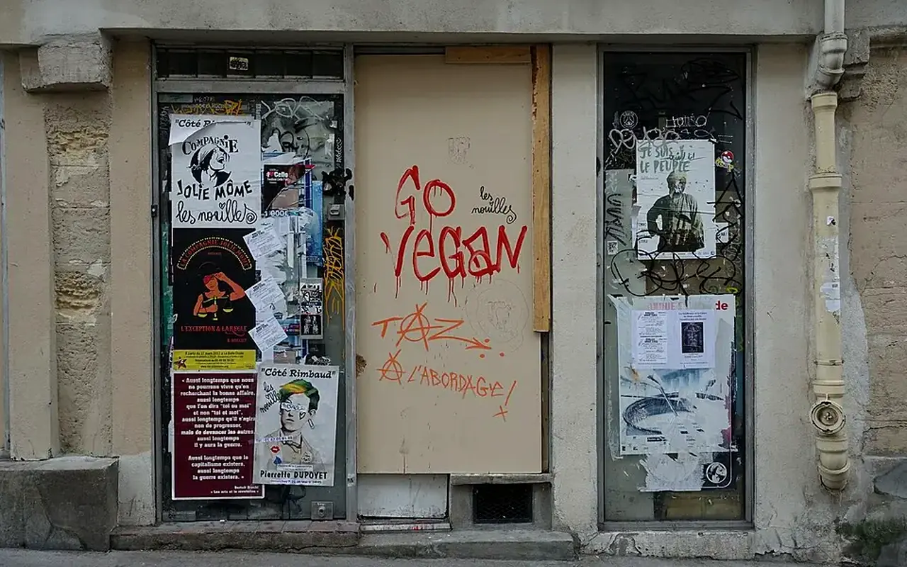
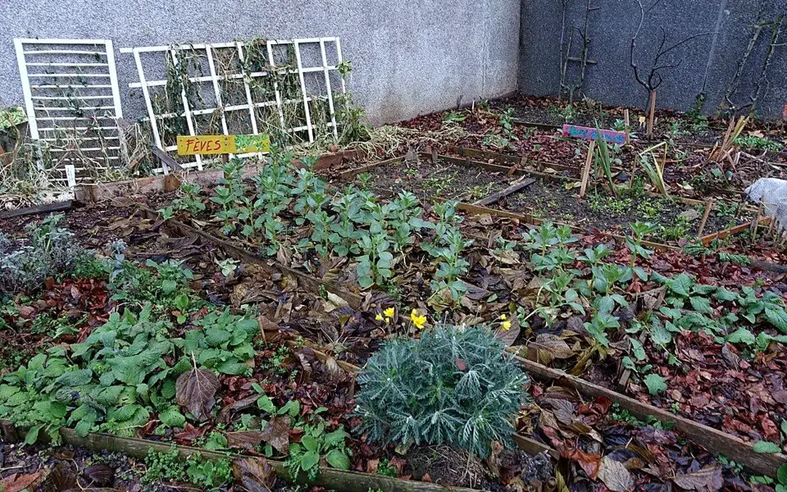
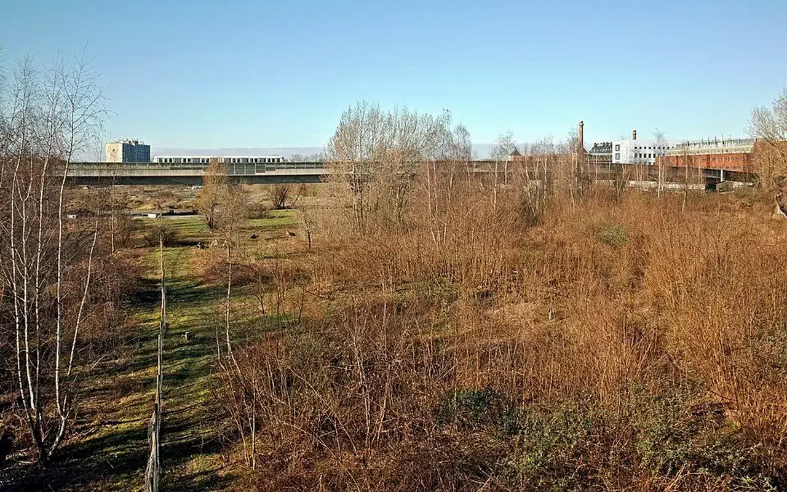
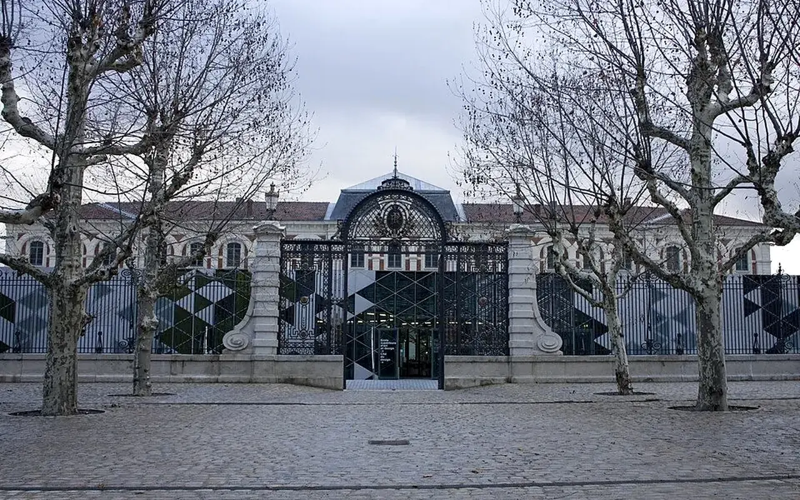

Vision nationale
Cinq pôles pour ne pas traiter les problèmes en silos
Un logement vacant peut n’cessiter des matériaux de réemploi, un chantier participatif, un accord avec une collectivité et un usage temporaire. Une friche peut devenir un lieu nourricier, culturel ou associatif. Un commerce ferm² peut retrouver une fonction si le bon usage, le bon cadre et les bons acteurs sont réunis. Les pôles TVF servent à relier ces dimensions dans une méthode lisible.
Association en création
Les pôles décrivent une organisation cible et une méthode de travail. Aucun projet réalisé, partenaire acquis, financeur confirm² ou résultat d'impact n'est affiché sans justificatif.
Chiffres de contexte
Des signaux nationaux qui justifient une approche intégrée
Ces repères éclairent les sujets traités par les pôles. Ils ne sont pas des résultats de Territoires Vivants France.
Les cinq domaines d'action
Chaque pôle porte une expertise, mais la réponse se construit collectivement
La page présente les pôles comme des modules professionnels : objectifs, publics, missions, documents de cadrage, exemples types et limites de publication.

Habitat et usages
Pourquoi ce pôle existe
Missions
Publics concernés
Exemple de projet
Documents de cadrage
FAQ courte
Découvrir le pôle
Habitat Vivant
Habitat Vivant s'intéresse aux logements vacants, dégradés ou sous-utilisés lorsque leur remise en usage peut répondre à un besoin local : logement temporaire, habitat intergén’rationnel, accueil associatif ou solution solidaire.
Repère national+ 1 M de logements vacants depuis plus de deux ans recensés en 2020 par Zéro Logement Vacant.
Le pôle existe parce que la vacance n'est pas seulement un problème immobilier : elle touche le cadre de vie, l'attractivité des centres-bourgs, la dignité de l'habitat et la capacité des territoires à répondre aux besoins des habitants.
- Repérage des logements vacants
- Dialogue avec les propriétaires
- Scénarios de remise en usage
- Lien avec le programme Bien Solidaire
Propriétaires, communes, habitants, acteurs de l'habitat, associations locales
Exemple type : un logement ferm² depuis plusieurs années peut être diagnostiqué, sécuris’ juridiquement puis orienté vers une solution d'usage temporaire ou solidaire.
Fiche diagnostic logement, trame de convention d'usage, critères de qualification.
Chaque demande est qualifiée avant publication : faisabilité, statut, risques, utilité territoriale et capacité de suivi.

Ressources et réemploi
Pourquoi ce pôle existe
Missions
Publics concernés
Exemple de projet
Documents de cadrage
FAQ courte
Découvrir le pôle
Matériauthèque Solidaire
La Matériauthèque Solidaire organise la valorisation territoriale des matériaux encore utiles. Elle ne fonctionne pas comme une distribution libre : les ressources sont qualifiées, tracées et affectées à des projets validés.
Repère national310 Mt de déchets ont été produits en France en 2020 ; 66 % des tonnages sont des déchets minéraux issus de la construction selon le SDES.
Ce pôle répond au gaspillage de ressources, au coût croissant des matériaux et au besoin de soutenir des projets locaux qui manquent de moyens techniques ou financiers.
- Identifier les stocks disponibles
- Évaluer l'État et l'usage possible
- Orienter vers les projets validés
- Documenter le suivi
Entreprises, artisans, collectivités, particuliers, associations, porteurs de projets
Exemple type : des menuiseries, palettes, sanitaires ou luminaires peuvent être intégrés à une rénovation associative si leur État et leur usage sont compatibles.
Fiche ressource, grille de tri, convention de valorisation, registre d'affectation.
Chaque demande est qualifiée avant publication : faisabilité, statut, risques, utilité territoriale et capacité de suivi.

Centralités et proximité
Pourquoi ce pôle existe
Missions
Publics concernés
Exemple de projet
Documents de cadrage
FAQ courte
Découvrir le pôle
Commerce Vivant
Commerce Vivant vise les rez-de-chauss’e et cellules commerciales inoccupés afin de structurer des usages utiles : commerces de proximité, ateliers, boutiques éphémères, tiers-lieux ou locaux associatifs.
Repère national244 communes sont concern’es par Action cœur de ville en 2025, signe de l'enjeu national des centralités commerciales.
Un local ferm² peut fragiliser toute une rue : baisse des flux, sentiment d'abandon, perte de services et difficulté pour de nouveaux porteurs d'activité à s'installer.
- Recenser les vitrines fermées
- Qualifier les locaux
- Tester des usages transitoires
- Accompagner les porteurs d'activité
Collectivités, propriétaires de locaux, commerçants, artisans, associations, entrepreneurs
Exemple type : une ancienne boutique peut être étudiée pour accueillir un atelier d'artisan, une permanence associative ou un commerce temporaire.
Fiche local commercial, grille d'usage, modèle de convention d'occupation.
Chaque demande est qualifiée avant publication : faisabilité, statut, risques, utilité territoriale et capacité de suivi.

Sols, friches et biodiversité
Pourquoi ce pôle existe
Missions
Publics concernés
Exemple de projet
Documents de cadrage
FAQ courte
Découvrir le pôle
Friches & Terrains Vivants
Friches & Terrains Vivants transforme la lecture des espaces abandonnés : plutôt que de les considérer seulement comme des vides, le pôle recherche des usages sobres, temporaires, écologiques ou collectifs.
Repère nationalCartofriches, outil du Cerema, structure le repérage national des friches et leur documentation territoriale.
Les friches et terrains délaissés croisent plusieurs enjeux : foncier, biodiversité, sécurité, mémoire des lieux, cadre de vie et sobriété face à l'artificialisation.
- Observer l'État des sites
- Identifier les contraintes
- Structurer des usages réversibles
- Relier nature, culture et services
Communes, habitants, associations, aménageurs, acteurs environnementaux
Exemple type : un terrain inutilisé peut devenir jardin partagé, espace nourricier, lieu pédagogique ou espace culturel temporaire.
Fiche terrain, grille risques-usages, trame d'animation locale.
Chaque demande est qualifiée avant publication : faisabilité, statut, risques, utilité territoriale et capacité de suivi.

Humain et parcours
Pourquoi ce pôle existe
Missions
Publics concernés
Exemple de projet
Documents de cadrage
FAQ courte
Découvrir le pôle
Solidarité & Insertion
Solidarité & Insertion relie les projets de revitalisation à l'engagement citoyen, aux compétences locales, aux chantiers participatifs et aux parcours vers l'emploi.
Repère nationalL'ESS représente une part importante de l'emploi salarié en France ; TVF s'inscrit dans cette logique d'utilité sociale et territoriale.
Un territoire vivant ne se résume pas à ses bâtiments : il repose aussi sur les habitants, les bénévoles, les jeunes, les seniors, les associations et les personnes qui cherchent une place dans l'activité locale.
- Accueillir les bénévoles
- Construire des missions utiles
- Structurer des ateliers pratiques
- Valoriser les compétences
Bénévoles, associations, jeunes, seniors, structures d'insertion, acteurs de l'emploi
Exemple type : un chantier participatif peut devenir support d'apprentissage, de lien social et de transmission de savoir-faire.
Fiche mission bénévole, charte d'engagement, cadre sécurité chantier.
Chaque demande est qualifiée avant publication : faisabilité, statut, risques, utilité territoriale et capacité de suivi.
Infographie de coopération
Comment les pôles travaillent ensemble
Un dossier TVF ne suit pas toujours le même chemin, mais la méthode doit rester lisible, vérifiable et progressive.
Signalement, observation ou donnée publique.
Statut, État, risques, besoins et potentiel.
Habitat, commerce, friche, matériaux ou insertion.
Les autres pôles apportent ressources et compétences.
Dons, mécénat, subventions ou financement solidaire confirmés.
Rôles, usages, durée, responsabilités et publication.
Matériaux, chantiers, sécurité et suivi technique.
Logement, local, jardin, atelier, formation ou service.
Indicateurs réels, datés et territorialis’s.
Carte interactive préparée
Visualiser les planifiés territoires de déploiement
La carte prépare l'affichage planifié des territoires pilotes, antennes locales, collectivités contributrices et ressources qualifiées. Les points restent illustratifs tant qu'aucune implantation n'est officiellement constituée.
Ouvrir la carte des territoires
Saint-Étienne : territoire pilote
Métropole : territoires à qualifier
Outre-mer : développement planifié
Ce que chaque pôle apporte à un projet
| Pôle | Apport principal | Donnée à suivre | Garde-fou |
|---|---|---|---|
| Habitat Vivant | Remise en usage de logements | Biens repérés et qualifiés | Aucun bien publié sans accord et diagnostic |
| Matériauthèque Solidaire | Valorisation des ressources | Matériaux proposés, État, affectation | Pas de distribution automatique |
| Commerce Vivant | Réactivation des centralités | Locaux recensés et usages testés | Pas de promesse d'activité sans porteur identifié |
| Friches & Terrains Vivants | Usages sobres des espaces délaissés | Contraintes, risques, usages possibles | Pas d'occupation sans cadre sécuris’ |
| Solidarité & Insertion | Engagement et parcours utiles | Missions, bénévoles, compétences | Pas de chantier sans sécurité ni encadrement |
FAQ
Questions fréquentes sur les pôles
Les cinq pôles sont-ils déjà opérationnels partout ?
Non. Ils décrivent la structure nationale cible. Leur activation dépendra des territoires, des compétences disponibles, des conventions et des ressources confirmées.
Un projet peut-il mobiliser plusieurs pôles ?
Oui. C'est même l'intérêt du modèle TVF : un bien vacant peut mobiliser habitat, matériaux, insertion, financement et observatoire.
Pourquoi ne pas afficher de partenaires par pôle ?
Parce qu'aucun partenaire ne doit être présenté comme acquis sans convention, accord de publication ou confirmation officielle.
Quels documents seront publiés ?
Les documents seront ajoutés progressivement : grilles de diagnostic, modèles de convention, critères de s’lection, fiches ressources et rapports d'impact validés.
Construire une méthode nationale
Un territoire, un bien ou une ressource peut devenir le point de départ d'un projet utile
TVF qualifie les situations avant d'agir et oriente chaque demande vers le ou les pôles adaptés.
Stratégie nationale
Du constat à l'action : Une architecture nationale pour transformer les ressources abandonnées
Cette page situe le sujet dans une trajectoire de deploiement progressif, documente et duplicable.
Problème
Les besoins sont nationaux, mais les solutions doivent etre construites territoire par territoire.
Donnée utile
Repere public : les politiques de revitalisation, sobriete fonciere et transition écologique exigent des preuves locales.
Solution TVF
TVF assemble une méthode duplicable : diagnostic, acteurs, convention, ressources, financement et impact.
Méthode
Le deploiement part de Saint-Étienne, puis s'élargit uniquement avec des relais, données et capacités confirmees.
Acteurs
Collectivités, État, entreprises, associations, propriétaires, financeurs, benevoles et habitants.
Impact visé
Construire une plateforme utile, lisible et mesurable pour plusieurs territoires sans annoncer de résultats fictifs.
Passer à l’action
Choisir le parcours adapté à votre rôle
Chaque demande doit être orientée vers un cadre clair : besoin territorial, propriétaire, ressource, financement, bénévolat ou coopération institutionnelle.